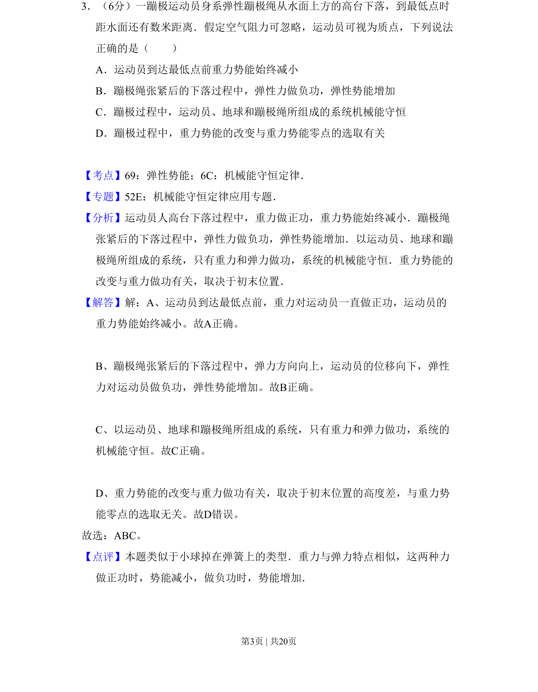
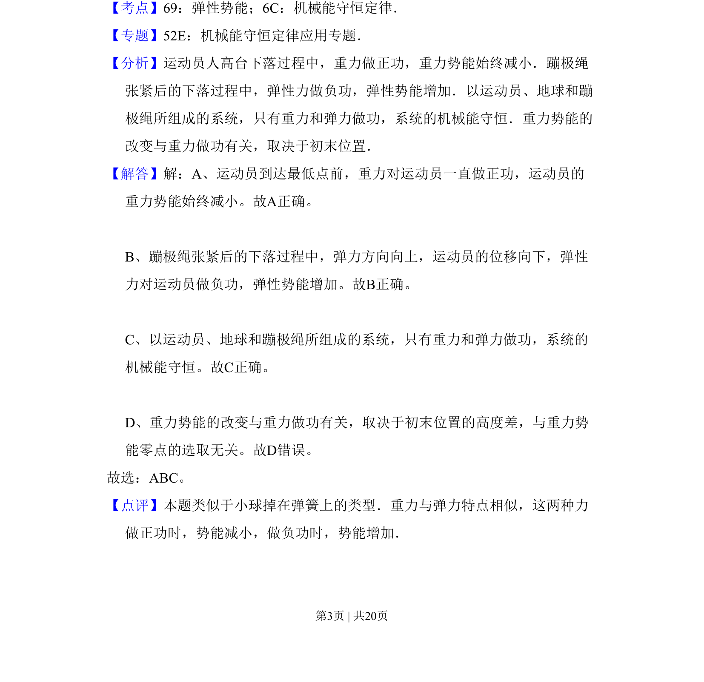

2011-新课标-03
考点：弹性势能 机械能守恒定律
题面

摘要
蹦极过程中重力势能、弹性势能与机械能守恒的判断
关联考点
答案与解析


📄 原 PDF 第 3 页：
素材/真题/吉林/2008-2024·（吉林）物理高考真题/2011年高考物理试卷（新课标）（解析卷）.pdf
题干文本
3．（6分）一蹦极运动员身系弹性蹦极绳从水面上方的高台下落，到最低点时 距水面还有数米距离．假定空气阻力可忽略，运动员可视为质点，下列说法 正确的是（ ） A．运动员到达最低点前重力势能始终减小 B．蹦极绳张紧后的下落过程中，弹性力做负功，弹性势能增加 C．蹦极过程中，运动员、地球和蹦极绳所组成的系统机械能守恒 D．蹦极过程中，重力势能的改变与重力势能零点的选取有关
解析文本
【考点】69：弹性势能；6C：机械能守恒定律．菁优网版权所有 【专题】52E：机械能守恒定律应用专题． 【分析】运动员人高台下落过程中，重力做正功，重力势能始终减小．蹦极绳 张紧后的下落过程中，弹性力做负功，弹性势能增加．以运动员、地球和蹦 极绳所组成的系统，只有重力和弹力做功，系统的机械能守恒．重力势能的 改变与重力做功有关，取决于初末位置． 【解答】解：A、运动员到达最低点前，重力对运动员一直做正功，运动员的 重力势能始终减小。故A正确。
B、蹦极绳张紧后的下落过程中，弹力方向向上，运动员的位移向下，弹性 力对运动员做负功，弹性势能增加。故B正确。
C、以运动员、地球和蹦极绳所组成的系统，只有重力和弹力做功，系统的 机械能守恒。故C正确。
D、重力势能的改变与重力做功有关，取决于初末位置的高度差，与重力势 能零点的选取无关。故D错误。 故选：ABC。 【点评】本题类似于小球掉在弹簧上的类型．重力与弹力特点相似，这两种力 做正功时，势能减小，做负功时，势能增加．